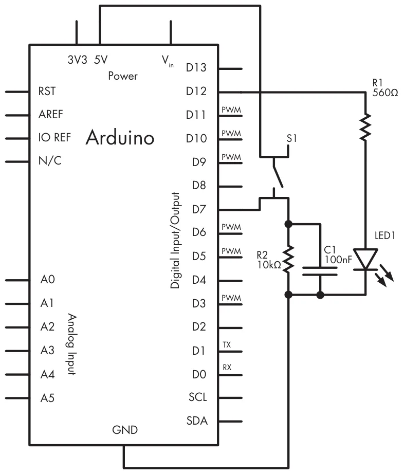
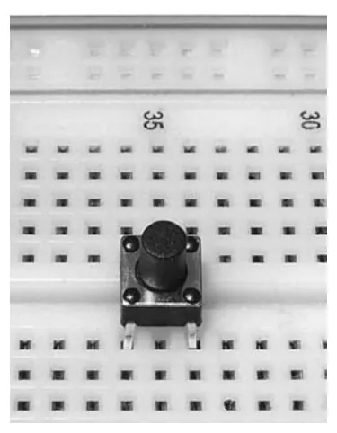
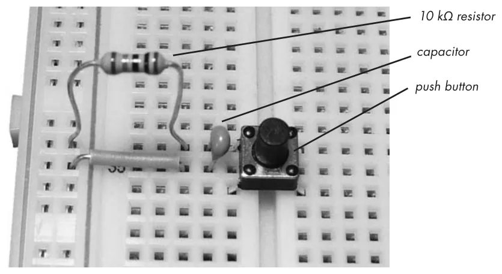
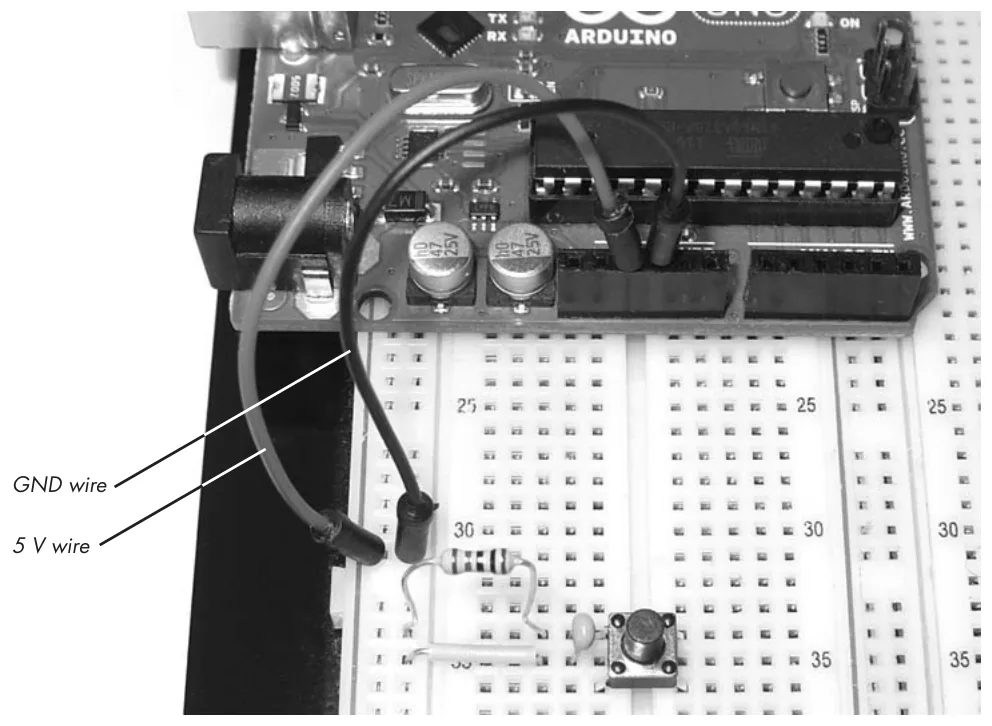
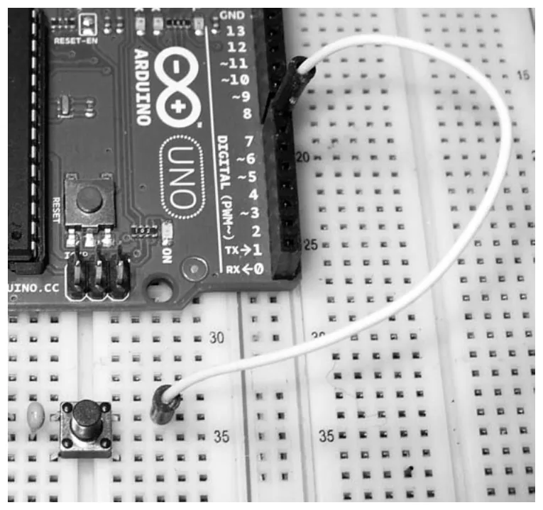
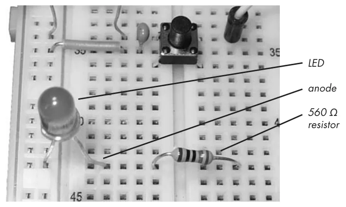
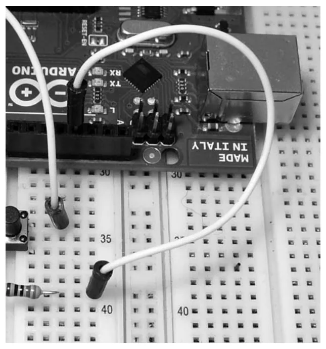

Our goal in this project is to create a button that turns on an LED for half a second when pressed.
The Algorithm
Here is our algorithm:
- Test to see if the button has been pressed.
- If the button has been pressed, then turn on the LED for half a second, and then turn it off.
- If the button has not been pressed, then do nothing.
- Repeat indefinitely.
The Hardware
Here’s what you’ll need to create this project:
- One push button
- One LED
- One 560 Ω resistor
- One 10 kΩ resistor
- One 100 nF capacitor
- Various connecting wires
- One breadboard
- Arduino and USB cable
The Schematic
First we create the circuit on the breadboard with the schematic shown in Figure 4-19. Notice how the 10 kΩ resistor is connected between GND and digital pin seven. We call this a pull-down resistor, because it pulls the voltage at the digital pin almost to zero. Furthermore, by adding a 100 nF capacitor across the 10 kΩ resistor, we create a simple debounce circuit to help filter out the switch bounce. When the button is pressed, the digital pin goes immediately to high. But when the button is released, digital pin seven is pulled down to GND via the 10 kΩ resistor, and the 100 nF capacitor creates a small delay. This effectively covers up the bouncing pulses by slowing down the voltage falling to GND, thereby eliminating most of the false readings due to floating voltage and erratic button behavior.

Because this is the first time you’re building a circuit with a schematic, follow these step-by-step instructions as you walk through the schematic; this should help you understand how the components connect:

- Insert the push button into the breadboard, as shown in Figure 4-20.
- Turn the breadboard 90 degrees counterclockwise and insert the 10 kΩ resistor, a short link wire, and the capacitor, as shown in Figure 4-21.

- Connect one wire from the Arduino 5 V pin to the leftmost vertical column on the breadboard, and connect another wire from the Arduino GND pin to the vertical row to the right of the 5 V column, as shown in Figure 4-22.

- Run a wire from Arduino digital pin 7 to the breadboard near the top-right corner of the button, as shown in Figure 4-23.

- Insert the LED into the breadboard with the short leg (the cathode) connected to the GND column, and the long leg (the anode) in a row to the right. Next, connect the 560 Ω resistor to the right of the LED, as shown in Figure 4-24.

- Connect a wire from the right side of the 560 Ω resistor to Arduino digital pin 12, as shown in Figure 4-25.

Before continuing, review the schematic for this circuit and check that your components are wired correctly. Compare the schematic against the actual wiring of the circuit.
The Sketch
For the sketch, enter and upload Listing 4-1:
// Project 4 - Demonstrating a Digital Input
❶ #define LED 12
#define BUTTON 7
void setup()
{
❷ pinMode(LED, OUTPUT); // output for the LED
pinMode(BUTTON, INPUT); // input for the button
}
void loop()
{
if ( digitalRead(BUTTON) == HIGH )
{
digitalWrite(LED, HIGH); // turn on the LED
delay(500); // wait for 0.5 seconds
digitalWrite(LED, LOW); // turn off the LED
}
}After you’ve uploaded your sketch, tap the push button briefly and your LED should stay on for half a second.
Modifying Your Sketch
Once you’ve had some success, try modifying your sketch by changing the length of time that the light stays on or by adding a push button control to Project 3. (Don’t disassemble this circuit, though; we’ll use it again in the next example.)
Understanding the Sketch
Let’s examine the new items in the sketch for Project 4—specifically, #define, digital input pins, and the if-then function.
Creating Constants with #define
Before void setup(), we use #define statements at ❶ to create fixed variables: When the sketch is compiled, the IDE replaces any instance of the defined word with the number that follows it. For example, when the IDE sees LED in the line at ❷, it replaces it with the number 12.
We’re basically using the #define command to label the digital pins for the LED and button in the sketch. Also notice that we do not use a semicolon after a #define value. It’s a good idea to label pin numbers and other fixed values (such as a time delay) in this way, because if the value is used repeatedly in the sketch, then you won’t have to edit the same item more than once. In this example, LED is used three times in the sketch; to edit this value, we’d simply have to change its definition once in its #define statement.
Reading Digital Input Pins
To read the status of a button, we first define a digital I/O pin as an input in void setup() using the following:
pinMode(BUTTON, INPUT); // input for buttonNext, to discover whether the button is connecting a voltage through to the digital input (that is, it’s being pressed), we use digitalRead(pin), where pin is the digital pin number to read. The function returns either HIGH (voltage is close to 5 V at the pin) or LOW (voltage is close to 0 V at the pin).
Making Decisions with if
Using if, we can make decisions in our sketch and tell the Arduino to run different code, depending on the decision. For example, in the sketch for Project 4, we used Listing 4-2:
// Listing 4-2
if (digitalRead(BUTTON) == HIGH)
{
digitalWrite(LED, HIGH); // turn on the LED
delay(500); // wait for 0.5 seconds
digitalWrite(LED, LOW); // turn off the LED
}if-then exampleThe first line in the code begins with if tests for a condition. If the condition is true (that is, voltage is HIGH), then it means that the button is pressed and the code that follows inside the curly brackets will run.
To determine whether the button is pressed (digitalRead(BUTTON) is set to HIGH), we use a comparison operator, a double equal sign (==). If we were to replace == with != (not equal to) in the sketch, then the LED would turn off when the button is pressed instead. Try it and see.
Making More Decisions with if-then-else
You can add another action to an if statement by using else. For example, if we rewrite Listing 4-1 by adding else as shown in Listing 4-3, then the LED will turn on if the button is pressed, or else it will be off. Using else forces the Arduino to run another section of code if the test in the if statement is not true.
// Listing 4-3
#define LED 12
#define BUTTON 7
void setup()
{
pinMode(LED, OUTPUT); // output for the LED
pinMode(BUTTON, INPUT); // input for the button
}
void loop()
{
if ( digitalRead(BUTTON) == HIGH )
{
digitalWrite(LED, HIGH);
}
else
{
digitalWrite(LED, LOW);
}
}else